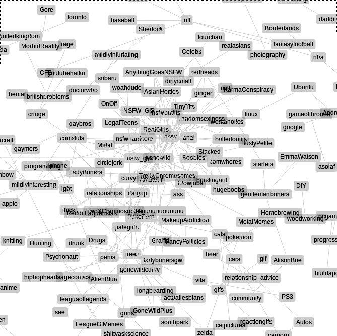
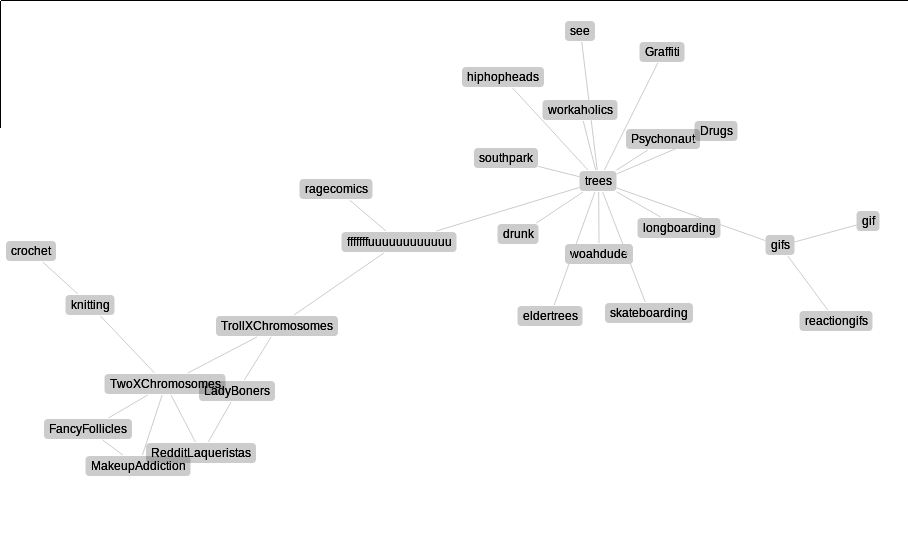
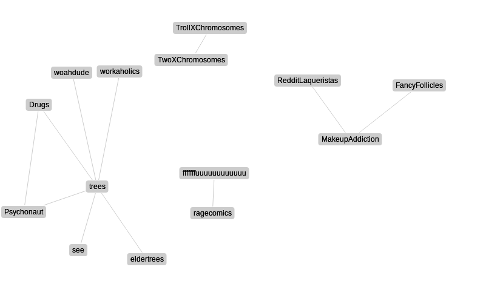
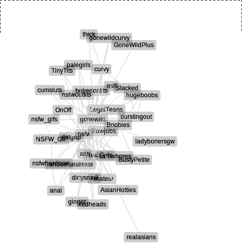
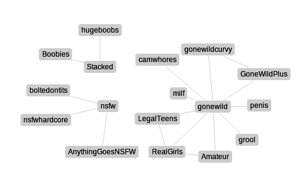
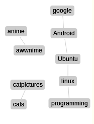
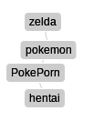

What are the Hidden Communities of Reddit?
Social networks like Facebook, LinkedIn, and MySpace, where the relationships between users are explicit, have been mined to death. But social communities like Reddit, StackExchange, Hacker News and SomethingAwful have barely been mined at all. I'm working on a project to try to predict social cascades - when new memes are going to spread, and where they are going to go. But inference on graphs is hard!
To limit the difficulty, we can reduce the number of edges in the graph, and only look at the important ones. But what are important edges?
Time to SCRAPE ALL THE THINGS! I wrote scrapers for Reddit (using their awesome
API) SomethingAwful (using
BeautifulSoup!) and StackExchange (well, actually I used the
dataset they so kindly released). For Reddit and SomethingAwful, I made a huge adjacency matrix that showed how many users posting in each forum had also recently posted in another forum. StackExchange has public member subscriptions, and
Wes made a matrix from that.
The first ideas for meaningful matrices failed. The default subreddits, the content-aggregating forums, and StackOverflow were so overrepresented in terms of sheer numbers that it was nearly impossible to see anything else for the noise. There are 50! = 3.0414093e+64 connections between 50 different sites. Our solution? Finding the sites with a reasonable number of subscribers (to eliminate flukes) with connections several standard deviations above the norm of the strength of a standard connection.
Our initial attempts looked something like this:

Graphviz is a great library for procedurally generating graphs, and it was really easy to play around with parameters and filters to find the best ways to see significant things about the structure of these communities. It turns out there's an amazing library that mimics graphviz in javascript called
arbor.js that I'm using to present this data.
It's immediately clear that this can be used as a recommender system. My favorite show, Doctor Who, is more significantly linked with Sherlock than anything else.
It's also interesting to look at how sub-communities evolve, and the paths between communities. Reddit was definitely the most fun.
From Knitting to trees via TrollXChromosomes

There's a sort of fractal property to these graphs - when we set the limit for significance low enough, the graph is fully connected. When it's too high, we get nearly no edges. But as the level of significance gets lower, big communities break into smaller, more tightly related subcommunities that break up even more.
With a higher standard for strong-enough connection

Reddit has a more fractured structure with tighter subcommunities than the other sites. SomethingAwful only has a handful of specialized subcommunities - Automobiles, Sports, Movies and Fitness. Reddit is much more niche, and has groups within groups. Examine the difference in the structure of the NSFW subreddits in the dense and sparse Reddit visualizations below.
There seems to be no structure to desire

Until we dig deeper

Finally, there were a few stereotypes that didn't show up, and a few that did. For instance, the female cluster didn't connect with any of the relationship-oriented subreddits. Some sterotypes were perpetuated - people who like cats like catpictures, for instance. And some new affiliations were discovered.
Some obvious connections, and some less obvious


Now that we have this sparser graph, we can do efficient inference with our ML algorithms, but that's another post for another day.